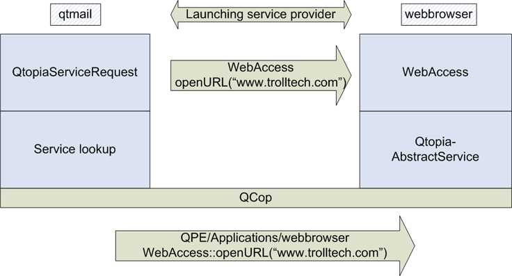

|
Home · All Namespaces · All Classes · Grouped Classes · Modules · Functions | |
Application Services are standardized APIs to access functionality supplied by other applications. They allow applications to invoke the services of other applications, while allowing the specific application providing the service to be selected by the system integrator or end-user. Messages between applications are delivered via Qt Extended IPC.
The following provides a list of the pre-defined services:
To request a service, the calling application executes:
QtopiaServiceRequest srv(servicename, action);
srv << parameters;
srv.send();
For example:
QtopiaServiceRequest srv("WebAccess", "openURL(QString)");
srv << QString("www.example.com");
srv.send();
QtopiaServiceRequest::send() returns a boolean value indicating whether the service is available. The next image demonstrates the service interaction, assuming that the qtmail application is requesting the WebAccess service:

To respond to a service request, an application should use the QtopiaAbstractService class. The following example responds to the openURL(QString) request on the WebAccess service. It would typically be implemented by a Web browser application:
class WebAccessService : public QtopiaAbstractService
{
Q_OBJECT
public:
WebAccessService( QObject *parent )
: QtopiaAbstractService( "WebAccess", parent )
{ publishAll(); }
public slots:
void openURL( const QString& url );
};
When an openURL(QString) request arrives, it will be automatically delivered to the WebAccessService::openURL() slot in the application.
Applications register as providing a service by supplying a standard Qt Extended configuration file, $QPEDIR/services/<servicename>/<appname> where:
The standard keys in this file are:
An integer: For example, 100 is interpreted as Version 1.00. Later versions of a service may support additional actions.
For each entry in the Actions list above, there is a group defining properties of the action.
The file may contain any additional sections, keys and values as defined by the documentation of the service.
Each new service must be carefully specified as it provides a system- wide API that can be invoked by other applications and the user. A service should only be added if it:
To add a new service, provide a standard Qt Extended configuration file, $QPEDIR/services/<servicename>.service. The keys in this file are:
This is a list of actions separated by semicolon (;). The actions include any formal parameters in parentheses, including the case of no parameters.
For each entry in the Actions list above, there is a group defining properties of the action.
An action with no parameters will appear in the list of available actions in the button settings. There is no need to add this section if the action has parameters and will not be shown to the user.
For example:
[Translation]
File=QtopiaServices
Context=Calendar
[Service]
Actions = "raiseToday();newEvent()"
Icon = datebook_icon
Name[]=Calendar
[newEvent()]
Icon = datebook_icon
Name[]=New event
[raiseToday()]
Icon=today
Name[]=Today's calendar
Usually, only one application responds to a given service. The user selects the application to handle the service using the Application Serviceas settings. If the service can be provided by multiple applications, the service file will contain:
Multiple = 1
in the [Service] section.
Some services may be parameterised on the type of data to be processed. Different applications may handle different data types. The Qt Extended Data Sharing (QDS) system should be used for these types of services.
| Copyright © 2009 Trolltech | Trademarks | Qt Extended 4.4.3 |